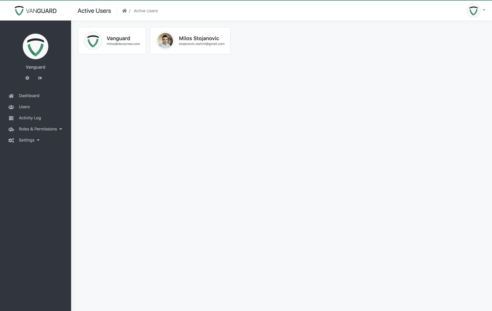
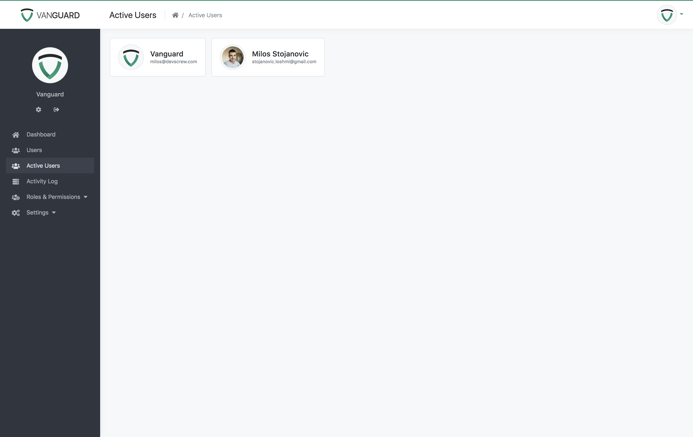

Creating New Page
Creating New Page
Chances are high that you would like to create your own pages inside the Vanguard application. This section will explain in details everything you need to do to add your own page into the system.
The page we are going to add will be simple page that will display the list of all users with active sessions.
Page Route
First thing we will have to do is to create new route for your page. We can do that by simply editing /routes/web.php file and adding the following code
anywhere inside the file. I've added it on top.
Route::get('active-users', function () {
return "Active users will be displayed here.";
})->name('active-users');To verify that this code is actually working, you should go to yourwebsite.com/active-users and you should see following text on your screen:
Active users will be displayed here.This means that your route is now working properly, so we can proceed and create new controller that will handle the actual request, instead of using this closure, as we did in our example above.
One more thing, as you can see, we assigned a name to this route. This is very handy feature since we can now reference our route by name, and in case that we want to change the url to something else in the future,
will will be able to change it only inside our routes/web.php file, and everything will work without any broken links.
Note! You can find more about routes inside Laravel's documentation.
Creating The Controller
Creating new controller in Laravel is pretty easy. If you are familiar with the terminal, you can navigate to Vanguard's root folder and type the following command
php artisan make:controller Web/ActiveUsersControllerAfter you execute this command, new controller will be automatically created for you and placed inside app/Http/Controllers/Web folder. The file will be named ActiveUsersController.php.
You can also create the controller by manually creating new controller file inside app/Http/Controllers/Web directory, if you are using the controller for Web application,
or inside app/Http/Controllers/Api directory if controller will be used for the API.
Now lets define our constructor and create new index method inside that controller. Controller will now look like following
namespace Vanguard\Http\Controllers\Web;
use Vanguard\Http\Controllers\Controller;
class ActiveUsersController extends Controller
{
public function __construct()
{
// Allow access to authenticated users only.
$this->middleware('auth');
// Allow access to users with 'users.manage' permission.
$this->middleware('permission:users.manage');
}
public function index()
{
return "Hello from ActiveUsersController";
}
}Since we now have the controller that will be responsible for our active users, we are free to update the route we created in previous chapter to actually point to this index method
we just created, instead of using closure:
// /routes/web.php
Route::get('active-users', 'ActiveUsersController@index')->name('active-users');
//...You can probably see the pattern here. If we translate the route above into a sentence, it basically says something like this:
When someone try to access
yourdomain.com/active-users, execute code that is located insideindexmethod fromActiveUsersController.
Now, if you access yourdomain.com/active-users from your browser, you will see the following response
Hello from ActiveUsersControllerOf course, since we added those two checks inside controller's constructor, you will have to be logged in and you must have users.manage permission to access this page.
Note! You can find more about controllers inside Laravel's documentation.
Fetching Users From DB
It's time to write the actual query that will fetch all users with active sessions available inside sessions database table. It is a simple join query, and Eloquent makes it even easier.
We will modify our controller to look like following:
namespace Vanguard\Http\Controllers\Web;
use Vanguard\Http\Controllers\Controller;
use Vanguard\User;
class ActiveUsersController extends Controller
{
public function index()
{
// Fetch users from database
$users = User::join('sessions', 'users.id', '=', 'sessions.user_id')
->select('users.*')
->distinct()
->get();
// Uncomment the following line if you want to see the info you get from the database
// dd($users);
// Load appropriate view for displaying the users
// Note: compact('users') is the same as ['users' => $users]
return view('user.active-users', compact('users'));
}
}As you can see, our join query is really simple. At the and of the index method, we will render our view, which we are going to create now.
Page View
In Laravel, all views are located inside resources/views folder. You can create unlimited number of sub-folders there, and group your views however you like it.
One great thing is that you can use dot notation when you want to render that view. That means that instead of / you can use "." when you want to reference your view from a controller.
In our controller code, we are referencing our view like user.active-users which means that we will create new file called active-users.blade.php inside resources/views/user folder.
As mentioned, you can put your view anywhere inside the resources/views folder, but for what we are building, it looks like user folder is the best place to put it.
Note! Laravel uses Blade templating language which has it's own tags and ways of building the templates. It is really simple, and you can learn more about it here.
Here is the source code of our view file:
@extends('layouts.app')
@section('page-title', 'Active Users')
@section('page-heading', 'Active Users')
@section('breadcrumbs')
<li class="breadcrumb-item active">
Active Users
</li>
@stop
@section('content')
@include('partials.messages')
@foreach($users as $user)
<div class="user media d-flex align-items-center">
<div>
<a href="#">
<img width="64" height="64"
class="media-object mr-3 rounded-circle img-thumbnail img-responsive"
src="{{ $user->present()->avatar }}">
</a>
</div>
<div class="d-flex justify-content-center flex-column">
<h5 class="mb-0">{{ $user->present()->name }}</h5>
<small class="text-muted">{{ $user->email }}</small>
</div>
</div>
@endforeach
@stop
@section('styles')
<style>
.user.media {
float: left;
border: 1px solid #dfdfdf;
background-color: #fff;
padding: 15px 20px;
border-radius: 4px;
margin-right: 15px;
}
</style>
@stopLet's explain what is happening here:
@extends('layouts.app') - means that this file is extending default layout called app, which is located inside resources/views/layouts folder.
@section('page-title', 'Active Users') - page title. Check <title></title> element inside app layout to see where it will be printed out.
@section('page-heading', 'Active Users') - page heading. Text to be rendered inside the header.
@section('breadcrumbs') ... @stop - page specific breadcrumbs.
@section('content') ... @stop - The actual content section. Everything that is inside those two tags (@section('content') and @stop) will be echoed out on the same place where @yield('content') is located inside app layout.
Inside this section we are just looping through the passed array of users and printing them out. We are using bootstrap media object just to make things a bit prettier. You can also click on user's avatar
and it will take you to the user profile page.
@section('styles') ... @stop - Anything that is located inside this section will be automatically placed inside the header (check app layout and search for @yield('styles')) of the page.
We are placing this css here just to make things easier and have everything in one file, but when you are building something, you will probably put the css inside public/assets/css/app.css file, since that's where Vanguard custom css is located.
If we open the page now, it will look like following:

Sidebar Menu
As you can see, we are able to access this page, but only by manually typing the url inside the browser's address bar. Lets add new link inside the sidebar menu that will point to our newly created page.
All we have to do is to edit resources/views/partials/sidebar.blade.php view file and add our link wherever we want it to appear. Since this section is accessible only for users with users.manage permission, it makes sense
to put this new link right after "Users" link, between @permission('users.manage') and it's @endpermission tag:
//...
@permission('users.manage')
<li class="nav-item">
<a class="nav-link {{ Request::is('user*') ? 'active' : '' }}" href="{{ route('user.list') }}">
<i class="fas fa-users"></i>
<span>@lang('app.users')</span>
</a>
</li>
<li class="nav-item">
<a href="{{ route('active-users') }}" class="nav-link {{ Request::is('active-users') ? 'active' : '' }}">
<i class="fas fa-users"></i>
Active Users
</a>
</li>
@endpermission
//...If you refresh the page now, you will see the newly created sidebar menu item.
